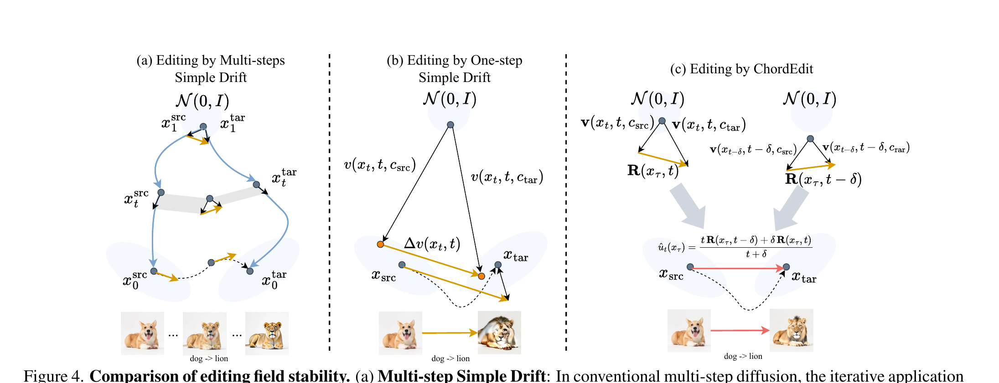
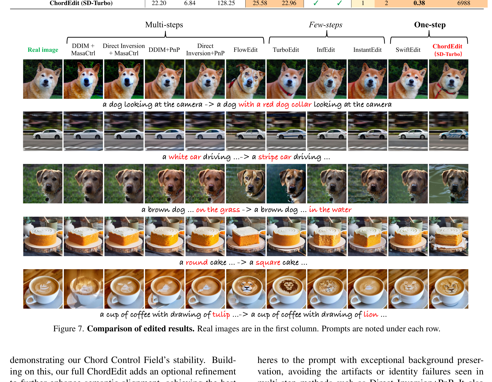
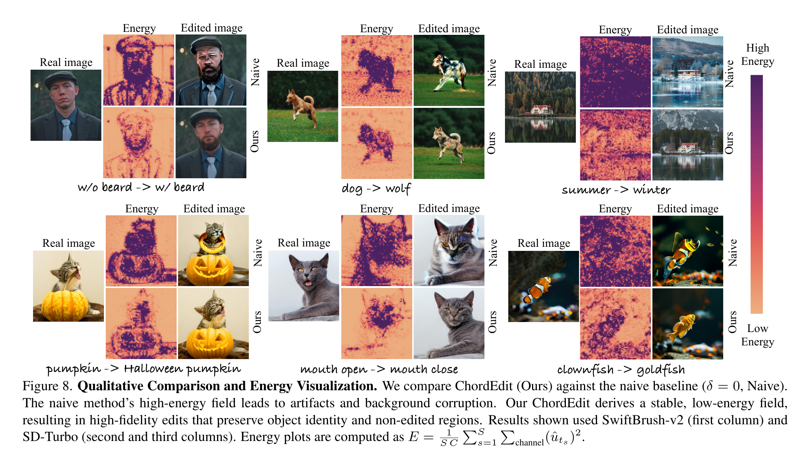

ChordEdit: why one-step image editing needs a low-energy chord, not a raw prompt difference
Root question. A one-step text-to-image model can synthesize an image in one large move. Why does the obvious editing trick, subtracting the source-prompt drift from the target-prompt drift, fall apart when that same move is used for real image editing? ChordEdit answers that the raw residual field is too high-energy for a single coarse integration step. The paper replaces that residual with a causal, locally averaged control field derived from dynamic optimal transport, then optionally applies one target-prompt refinement pass. The win is primarily efficiency: 0.20s for transport-only ChordEdit and 0.38s for the full variant on the reported setup, with 6988 MiB VRAM.

Q: what should the reader carry into the page?
Guide: read every formula as an attempt to make one large step less brittle. The paper does not train a new editor and does not invert the input image.
A: ChordEdit asks a numerical-analysis question inside an editing problem. If the control field is noisy and large, one Euler-sized step amplifies the damage. If the field is smoothed into a low-energy chord, the same one-step budget becomes usable.
Takeaway: The central claim is not that one-step editing wins every quality metric. It is that a low-energy control makes real-time, training-free editing plausible.
1. Motivation: why does simple drift subtraction fail?
Text-guided editing starts from a source image and two prompts: a source prompt $c_{\mathrm{src}}$ and a target prompt $c_{\mathrm{tar}}$. A conditional probability-flow model defines a drift field, which is the velocity that moves an image state through time under a prompt:
How to read Eq. 1
$x_t$ is the current image state, $t$ is the flow time, and $c$ is the text condition. The residual $\Delta v$ is attractive because it sounds like an edit direction: remove what the source prompt wants, add what the target prompt wants.
That residual works better when many small steps can average out local mistakes. One-step generators remove that safety net. The raw difference of two prompt-conditioned fields can be irregular, high magnitude, and highly sensitive to the text condition. Applying it once, with a large step, can warp the edited object and break non-edited regions.

Q: why can a multi-step editor tolerate the same idea better?
Guide: compare many small updates with one large update. A noisy direction is less dangerous when each step is small and the next query can correct course.
A: Multi-step editing gets repeated opportunities to remeasure the field. One-step editing spends the whole budget at once. If the field has spikes, the error is paid immediately and cannot be averaged away.
Takeaway: One-step editing turns a model-control problem into a stability problem.
2. Contribution: what is new, and what is not?
The authors' stated contribution is a training-free, inversion-free editor that makes one-step editing stable by replacing the naive residual with a Chord Control Field. The method treats editing as transport from the source-prompt distribution to the target-prompt distribution, then asks for a low-energy field that can be traversed in a single update.
The second contribution is the observable-field template. ChordEdit does not need the model to expose the exact drift. It only needs a prompt-conditioned output $Q$ and a time-only linear map $B_t$ that converts the output difference into a common velocity-like comparison domain. For SD-Turbo, $Q=\hat{\varepsilon}$ is the predicted noise and $B_t=A_t^{(\varepsilon)}$. For InstaFlow, $Q=\hat{v}$ is already a velocity head and $B_t\equiv I$.
The third contribution is a clean separation between transport and semantic amplification. The one-step chord field performs the structure-preserving transport. A proximal refinement pass can then make the target prompt more explicit, but it is optional and is not counted as part of the transport energy.
Q: what would be an overclaim here?
Guide: separate the mechanism from the leaderboard. The table shows a speed and memory story with quality trade-offs, not a universal quality win.
A: It would be wrong to present ChordEdit as official conference recognition or as the best method on every metric. It does not win PSNR overall; InfEdit is higher at 24.14. It does not win LPIPS; InfEdit is best at 55.69. It does not win CLIP-Edited overall; FlowEdit reaches 23.69. ChordEdit's strongest claim is fast training-free editing with competitive quality and the best CLIP-Edited score among the few-step and one-step rows.
Takeaway: The novelty is a low-energy control field for the real-time regime, not a blanket domination claim.
3. Dataset and metrics: what is being measured?
The empirical benchmark is PIE-bench, a standard instruction-based real-image editing set. The paper reports 700 samples across 10 editing categories at 512x512 resolution. Each instance provides a source image, text prompts, and a ground-truth mask for the edited region. The mask matters because background preservation is evaluated only outside the edited region.
Before any number appears, define the metrics. PSNR is peak signal-to-noise ratio on the non-edited region, so higher means better background preservation. MSE is mean squared error on the non-edited region, scaled by $10^3$, so lower is better. LPIPS is a learned perceptual distance, also scaled by $10^3$, so lower is better. CLIP-Whole measures text-image alignment for the full edited image, and CLIP-Edited measures alignment inside the edited region; higher is better for both. Runtime is wall-clock seconds per edit in the authors' setup. VRAM is peak GPU memory in MiB. Step is the reported sampling or editing step count, while NFE is the number of model function evaluations.
The hardware disclosure is a single NVIDIA Titan 24GB GPU. The paper's default parameters are $n=1$, $t=0.90$, $\delta=0.15$, $\lambda=1.00$, and $t_c=0.30$.
Q: why do the metrics pull in different directions?
Guide: background metrics reward preserving the source outside the mask. CLIP rewards making the target text visible. A stronger semantic edit can hurt perceptual similarity.
A: The benchmark is a trade-off test. A conservative method can score well on PSNR and LPIPS while under-editing. A stronger method can improve CLIP-Edited while paying a fidelity cost. ChordEdit exposes this tension directly through its transport-only and full variants.
Takeaway: Read Table 1 as a Pareto trade-off, not a single-score race.
4. Pipeline: from noisy residuals to one stable update
ChordEdit fixes the anchor at the clean source image $x_\tau:=x_{\mathrm{src}}$. At a requested time $t$, it creates a synthetic noisy state $z$ from a noising kernel $K(\cdot\mid x_t)$ or $K_t(\cdot\mid x_\tau)$, queries the same backbone twice under the source and target prompts, maps the difference into velocity units, and averages two nearby times. The observable proxy is:
Two concrete parameterizations
For SD-Turbo, $Q(z,t,c)=\hat{\varepsilon}_\theta(z,t,c)$ and $B_t=A_t^{(\varepsilon)}$. For InstaFlow, $Q(z,t,c)=\hat{v}_\theta(z,t,c)$ and $B_t\equiv I$. The template is model-agnostic because $B_t$ depends on time and the schedule, not on a trained editor.
{kind=link}


Q: where does the method spend its two evaluations in the full version?
Guide: distinguish transport from refinement. The field queries define the transport; the optional target-prompt pass sharpens semantics after transport.
A: Transport computes the Chord Control Field and takes one large update. The full version then makes one predict-$x_0$ style target-prompt pass for proximal refinement. Energy and stability claims attach to the transport before that refinement.
Takeaway: ChordEdit is fast because it replaces repeated integration with a better single control field, not because it trains a shortcut network.
5. Method: deriving the Chord Control Field
The cleanest way to see the method is to begin from optimal transport. Let $\rho_t(x)$ be the density that moves from the source boundary to the target boundary, and let $u_t(x)$ be the editing vector field that drives that motion. The ideal low-energy field solves the Benamou-Brenier dynamic OT problem:
The ideal $u_t$ is not directly available from a pretrained generator. The paper therefore uses a measurement model:
Now restrict attention to the short causal window $[t-\delta,t]$. ChordEdit estimates a locally constant control $u$ by minimizing a convex surrogate that balances two forces: stay close to the previous estimate, and agree with the fresh measurements across the window.
Because $\Phi$ is a positive weighted sum of squared distances, it has one minimizer. Taking the gradient makes the averaging structure explicit:
The online implementation then uses two first-order causal approximations. First, the previous estimate is approximated by the observable at the left endpoint, $\hat{u}_{t-\delta}(x_\tau)\approx R(x,t-\delta)$. Second, the window integral is approximated by its right endpoint, $\int_{t-\delta}^{t}R_\tau(x,\xi)d\xi\approx \delta R(x,t)$. Substituting those approximations gives the practical field:
This is a causal one-sided smoothing kernel, $\hat{u}=K_\delta*R$. Since $K_\delta$ is non-negative and has unit mass, Jensen's inequality gives an energy contraction:
The same smoothing reduces the time derivative and spatial-gradient sup-norms used in the paper's consistency proxy. In the paper's notation, $C_{\mathrm{cho}}\le C_{\mathrm{nai}}$, which tightens the explicit-Euler one-step $O(h)$ error bound for the chord field relative to the naive field. The stability-margin proposition gives the complementary message: because time-only convolution does not make the Jacobian bound worse, the one-step stability prescription is preserved or improved.
The comparison-domain coefficient for noise prediction is also closed-form. For a forward path $x_t=\alpha(t)x_0+\sigma(t)\varepsilon$, a shared noisy state implies $\Delta x_t=0$, so $\alpha(t)\Delta x_0+\sigma(t)\Delta\varepsilon=0$. For a noise-prediction model such as SD-Turbo, $\Delta Q=\Delta\hat{\varepsilon}$ and:
For a velocity or flow-matching head, the model already predicts the comparison-domain velocity, so $B_t\equiv I$. The appendix also derives $x_0$-, $v$-, score-, and consistency-model mappings with the same principle: keep the noisy state fixed, express the output difference in velocity units, and avoid a learned editor-specific adapter.
Q: why does a weighted average count as a mechanism rather than a heuristic?
Guide: connect three views: dynamic OT wants low kinetic energy, the measurement model says $R$ is noisy, and one-step Euler is sensitive to field magnitude and derivatives.
A: The minimizer is the solution of a convex local estimation problem. The kernel form then proves the key numerical property: smoothing contracts energy and derivative bounds instead of amplifying them. That is exactly the property a one-step integrator needs.
Takeaway: The chord formula is simple because the local surrogate is quadratic, but the stability claim comes from the OT and kernel-smoothing view.
6. Training and inference: training-free by design
ChordEdit is training-free. There is no optimizer, learning rate, epoch count, or fine-tuning schedule for the editor because the editor does not train a new network. It queries an existing fast text-to-image backbone under the source and target prompts, computes the chord field, and applies a single transport update.
The default inference procedure is:
- Set $n=1$, $t=0.90$, $\delta=0.15$, $\lambda=1.00$, and $t_c=0.30$.
- At the source anchor, evaluate the observable proxy at $t-\delta$ and $t$ with shared noise.
- Compute $\hat{u}_t=\big(tR(x,t-\delta)+\delta R(x,t)\big)/(t+\delta)$.
- Apply the one-step transport $x_{\mathrm{pred}}=x_{\mathrm{in}}+\lambda\hat{u}_t$.
- Optionally apply proximal refinement with only the target prompt.
The proximal refinement is Eq. 4.7 in the paper. It is a single $c_{\mathrm{tar}}$ predict-$x$ pass:
This refinement is not part of the transport. All energy metrics in the paper are computed before it. That detail matters because the full variant has NFE=2 and stronger CLIP-Edited, while the transport-only variant has NFE=1 and better fidelity.

Q: if there is no training, what can be tuned?
Guide: the knobs are inference knobs, not learned weights. They set the time window, step scale, refinement time, and number of noise samples.
A: $\delta$ controls how much temporal smoothing is applied. $t$ chooses the edit time. $\lambda$ scales the transport strength. $t_c$ controls the refinement pass. $n=1$ is the default because the chord field is already stable enough that extra Monte Carlo samples give little marginal gain in the reported ablations.
Takeaway: ChordEdit spends computation on better field estimation, not on per-image inversion or additional training.
7. Experiments: the efficiency win and the quality trade-off
The main quantitative table compares multi-step, few-step, and one-step editors on PIE-bench. PSNR, MSE, and LPIPS measure background consistency outside the edited region. CLIP-Whole and CLIP-Edited measure semantic alignment. T-free means training-free; I-free means inversion-free. Step, NFE, Runtime, and VRAM measure efficiency.
| Type | Method | PSNR↑ | MSE×10³↓ | LPIPS×10³↓ | CLIP-Whole↑ | CLIP-Edited↑ | T-free | I-free | Step↓ | NFE↓ | Runtime(s)↓ | VRAM(MiB)↓ |
|---|---|---|---|---|---|---|---|---|---|---|---|---|
| Multi-step | DDIM+MasaCtrl | 21.25 | 8.58 | 106.59 | 24.13 | 21.13 | ✓ | ✗ | 50 | 100 | 55.20 | 12272 |
| Multi-step | DirectInversion+MasaCtrl | 21.78 | 7.99 | 87.38 | 24.42 | 21.38 | ✓ | ✗ | 50 | 100 | 79.10 | 12272 |
| Multi-step | DDIM+PnP | 21.26 | 8.42 | 113.58 | 25.45 | 22.54 | ✓ | ✗ | 50 | 100 | 28.01 | 9262 |
| Multi-step | DirectInversion+PnP | 21.43 | 8.10 | 106.26 | 25.48 | 22.63 | ✓ | ✗ | 50 | 100 | 28.03 | 9262 |
| Multi-step | FlowEdit(SD3) | 22.17 | 7.69 | 104.81 | 26.64 | 23.69 | ✓ | ✓ | 33 | 33 | 7.22 | 17140 |
| Few-step | TurboEdit(SDXL-Turbo) | 21.44 | 9.49 | 108.60 | 24.66 | 21.79 | ✓ | ✓ | 4 | 4 | 2.69 | 13826 |
| Few-step | InfEdit(SD1.4) | 24.14 | 6.82 | 55.69 | 24.89 | 21.88 | ✓ | ✓ | 4 | 4 | 1.41 | 6502 |
| Few-step | InstantEdit(PeRFlow-SD1.5) | 23.80 | 4.21 | 60.92 | 24.97 | 21.82 | ✓ | ✗ | 4 | 8 | 1.30 | 16270 |
| One-step | SwiftEdit(SwiftBrush-v2) | 21.71 | 8.22 | 91.22 | 24.93 | 21.85 | ✗ | ✗ | 1 | 2 | 0.54 | 15060 |
| One-step | ChordEdit(SwiftBrush-v2) | 22.04 | 7.13 | 111.22 | 25.12 | 22.58 | ✓ | ✓ | 1 | 2 | 0.38 | 6988 |
| One-step | ChordEdit(w/o prox, SD-Turbo) | 23.89 | 5.05 | 88.36 | 24.97 | 21.87 | ✓ | ✓ | 1 | 1 | 0.20 | 6988 |
| One-step | ChordEdit(SD-Turbo) | 22.20 | 6.84 | 128.25 | 25.58 | 22.96 | ✓ | ✓ | 1 | 2 | 0.38 | 6988 |
Efficiency is the headline win. The transport-only SD-Turbo variant is the fastest row at 0.20s. The full SD-Turbo variant is 0.38s, still faster than SwiftEdit at 0.54s, InstantEdit at 1.30s, InfEdit at 1.41s, TurboEdit at 2.69s, FlowEdit at 7.22s, and DirectInversion+MasaCtrl at 79.10s. Using the full 0.38s number, ChordEdit is about 19x faster than FlowEdit, 208x faster than DirectInversion+MasaCtrl, and at least 3.4x faster than the fastest few-step row. On SwiftBrush-v2, it uses less than half SwiftEdit's VRAM: 6988 MiB versus 15060 MiB. InfEdit reports a lower memory number at 6502 MiB, so the correct claim is low memory relative to SwiftEdit, not a table-wide memory minimum.
The quality trade-off is real. Transport-only ChordEdit with SD-Turbo has high PSNR 23.89 and LPIPS 88.36, but its CLIP-Edited score is only 21.87. The full SD-Turbo variant flips the priority: it reaches CLIP-Edited 22.96, the best among the few-step and one-step rows, but it also has the worst LPIPS in the whole table at 128.25 and a mid-pack PSNR of 22.20. InfEdit still wins PSNR overall at 24.14 and LPIPS overall at 55.69. FlowEdit still wins CLIP-Edited overall at 23.69.
{kind=link}

The user study should also be framed carefully. The appendix reports 150 participants, 30 prompts, and 4,500 votes per criterion. ChordEdit is the most-preferred method with 42.5% of semantic-alignment votes and 48.3% of background-preservation votes. These are pluralities, not majorities above 50%.
Q: what is the fair reading of the result table?
Guide: start from the deployment constraint. If the task needs one-step, training-free, inversion-free editing, the comparison set narrows. If the task only cares about PSNR or LPIPS, ChordEdit is not the winner.
A: ChordEdit is compelling when latency and memory are first-class constraints. It buys real-time speed and low VRAM while keeping semantics competitive. The cost is that the full semantic variant pays a perceptual-distance penalty, visible in LPIPS 128.25.
Takeaway: The result is an efficiency-quality trade, not a quality-only sweep.
8. Ablations: does the chord field explain the gains?
The ablations test the paper's core causal story: if instability comes from a high-energy field, then increasing temporal smoothing should reduce energy, stabilize one-step integration, and improve the Pareto trade-off.
{kind=link}


The transport-refinement split is also explicit. Without proximal refinement, the naive baseline goes from PSNR 21.89 and CLIP-Edited 20.83 to ChordEdit's PSNR 23.89 and CLIP-Edited 21.87 at NFE=1. With refinement, the naive baseline is PSNR 21.38 and CLIP-Edited 21.96, while ChordEdit is PSNR 22.20 and CLIP-Edited 22.96 at NFE=2. The refinement increases semantic alignment, but the chord field is already useful before it.

Noise ablation supports the default $n=1$ choice. The paper reports that ChordEdit's Pareto front is nearly unchanged for $n=1,2,3,4$, while the naive baseline relies more on multiple samples. Seed robustness is also tight in the reported experiment: CLIP-Edited coefficient of variation 0.20% and PSNR coefficient of variation 0.07% for $n=1$.

Q: do the ablations validate every part of the theory?
Guide: separate proof-backed properties from empirical checks. Jensen gives an energy contraction for the smoothed field; the experiments check whether that contraction corresponds to better edits.
A: The ablations support the theory at the level the paper needs. Energy drops, one-step PSNR does not collapse, the Pareto front improves over $\delta=0$, and the transport-only variant already beats the naive control. They do not prove that ChordEdit is globally optimal for every prompt or backbone.
Takeaway: The ablation evidence is strongest for the stability mechanism, and weaker for broad generalization beyond the tested fast backbones.
9. Limitations: where the result can be oversold
| Boundary | What the paper shows | Careful reading |
|---|---|---|
| Quality metrics | ChordEdit is fast and competitive, with the full variant reaching CLIP-Edited 22.96 among few-step and one-step methods. | It does not win PSNR overall, does not win LPIPS overall, and does not beat FlowEdit's overall CLIP-Edited 23.69. |
| Proximal refinement | The optional pass boosts target semantics. | It is not part of transport, and the full variant pays a fidelity cost: LPIPS 128.25 is the worst in Table 1. |
| VRAM | ChordEdit uses 6988 MiB, less than half SwiftEdit on SwiftBrush-v2. | InfEdit reports 6502 MiB, so the memory claim should stay comparative rather than table-wide. |
| User study | ChordEdit is most-preferred at 42.5% for semantics and 48.3% for preservation. | Those are pluralities, not over-50% majorities. |
| Backbone scope | The paper tests SD-Turbo, SwiftBrush-v2, and InstaFlow-style parameterizations. | Other one-step or consistency backbones may need schedule-specific $B_t$ handling and retuned inference parameters. |
| Safety | The appendix discusses creative and assistive uses plus misuse risk. | Real-time high-fidelity editing can also support deceptive media. The method does not remove biases inherited from the pretrained backbone. |
Q: what sentence would mislead a reader most?
Guide: look for a sentence that hides the LPIPS cost or turns a plurality into a majority.
A: "ChordEdit is the best one-step editor" is too vague. A faithful sentence is: ChordEdit is the fastest reported method in Table 1, is training-free and inversion-free, uses much less VRAM than SwiftEdit on the same model, and trades perceptual fidelity for stronger CLIP-Edited in the full variant.
Takeaway: The paper is strongest when framed as a stable real-time transport method with explicit quality costs.
10. Summary: the page in one pass
One-sentence read. ChordEdit turns one-step image editing from raw prompt-vector arithmetic into a low-energy transport estimate, then shows that the resulting field is stable enough to make real-time training-free editing useful.
Q: what should a practitioner remember?
Guide: keep three levers separate: field smoothing, transport strength, and semantic refinement.
A: Use $\delta$ to smooth the unstable residual, $\lambda$ to scale the edit, and $t_c$ only if the transport result needs more target semantics. Then evaluate both sides of the trade-off: PSNR or LPIPS for preservation, and CLIP-Edited for target alignment.
Takeaway: ChordEdit is useful because it makes the single step numerically calmer; the optional refinement decides how much semantic force to add after that.
Three takeaways
- The mathematical core is the convex local surrogate whose minimizer becomes a causal one-sided smoothing of the noisy residual field.
- The proof story is coherent: smoothing lowers energy by Jensen, tightens the consistency proxy, and preserves or improves the Euler stability margin.
- The empirical story is honest only when efficiency and quality are both visible: 0.20s or 0.38s is impressive, but the full variant's LPIPS 128.25 must stay in view.
References
- Liangsi Lu, Xuhang Chen, Minzhe Guo, Shichu Li, Jingchao Wang, Yang Shi. ChordEdit: One-Step Low-Energy Transport for Image Editing. arXiv:2602.19083v2 [cs.CV], 25 Mar 2026. Source PDF used for this page:
sources/chordedit.pdf. - Project page listed in the PDF: https://chordedit.github.io/. Code link listed in the site manifest: https://github.com/ChordEdit/ChordEdit.
- Key related works discussed by the paper include Benamou and Brenier's dynamic optimal transport formulation, FlowEdit, InfEdit, SwiftEdit, SD-Turbo, SwiftBrush-v2, InstaFlow, MasaCtrl, Plug-and-Play diffusion features, and PIE-bench.